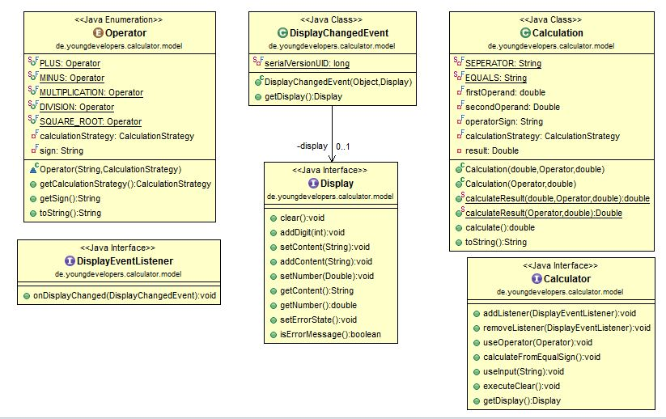
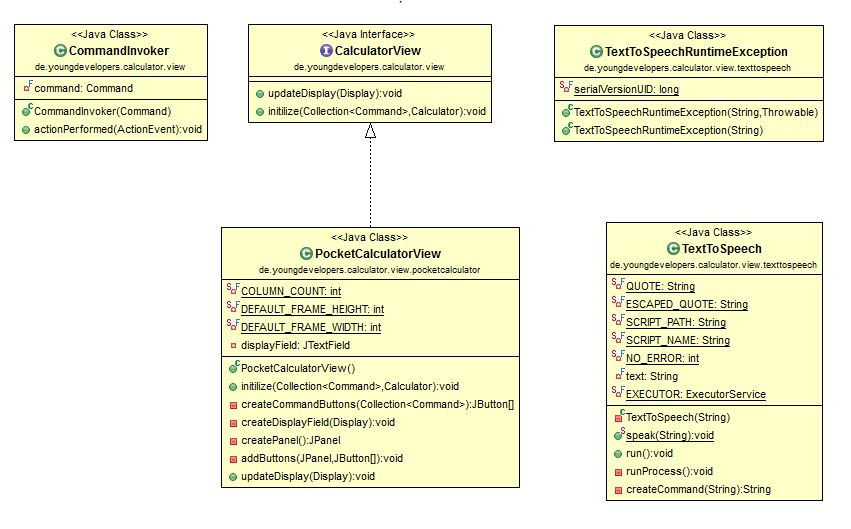
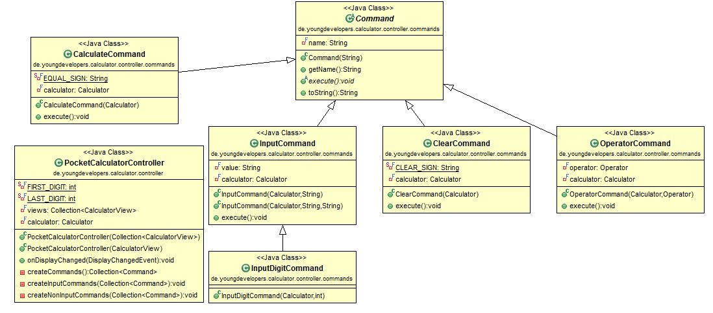
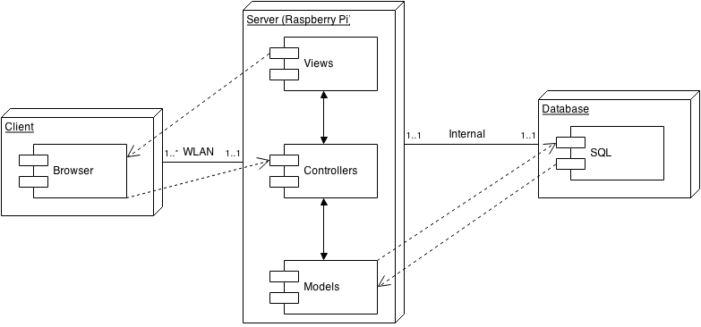
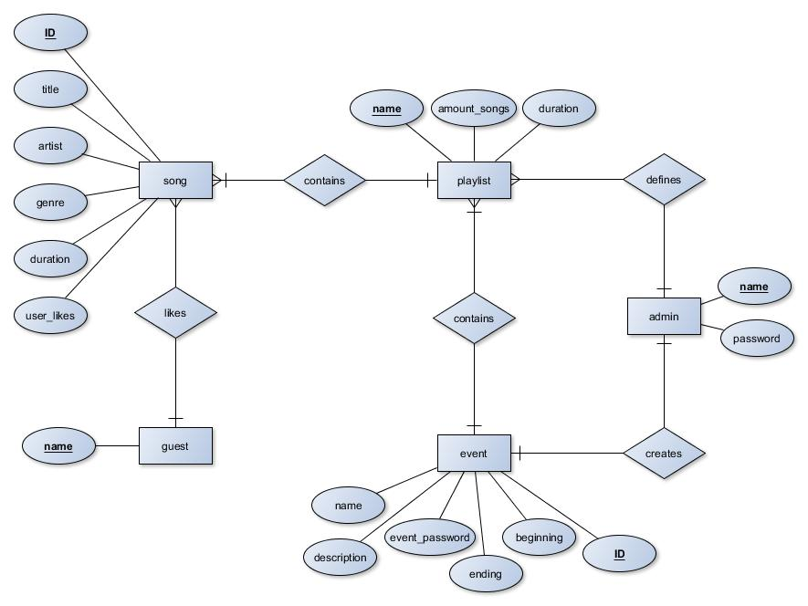
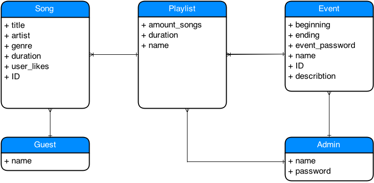

1. Introduction
Cloud is a project which consists of a website where you can upload your own music, vote for it and already existing music. The most liked song will be played by a wifi connected microcontroller which is connected to a 2.1 soundsystem.
1.1 Purpose
This document provides a comprehensive architectural overview of the system, using a number of different architectural views to depict different aspects of the system. It is intended to capture and convey the significant architectural decisions which have been made on the system.
1.2 Scope
The scope of this SAD is to depict the architecture of the "CLOUD" application.
1.3 Definitions, Acronyms and Abbreviations
- UML: Unified Modeling Language
- SAD: Software Architecture Document
1.4 References
(n/a)
1.5 Overview
to be determined
2. Architectural Representation
We use the java mvc framework 'play' for a better structure in our project. This mvc enables us to use the programming language Java (which we already know). Playis easily programmable, scalable and powerful.

3. Architectural Goals and Constraints
to be determined
4. Use-Case View
(n/a)
5 Logical View
5.1 Overwiev
to be determined
5.2 Architecturally Significant Design Packages
As we don't have a lot of code yet, we made class diagrams for the given code (calculator). You can see all diagrams for the calculator below:
Model

View

Controller

6 Process View
(n/a)
7 Deployment View

8 Implementation View
to be determined
8.1 Overview
to be determined
8.2 Layers
to be determined
9 Data View
ERM

EERM

10 Size and Performance
to be determined
11 Quality
to be determined